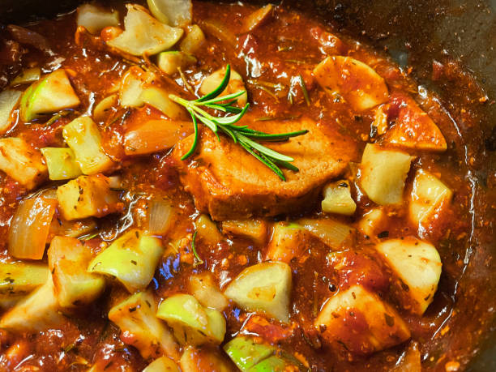
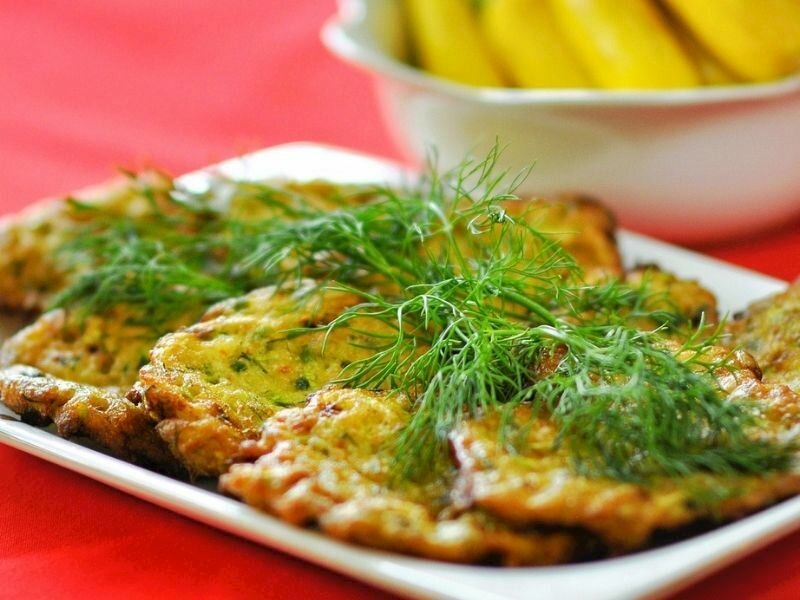
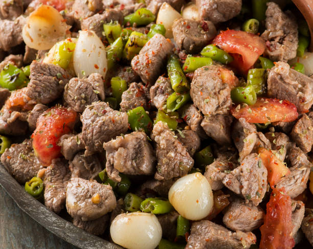
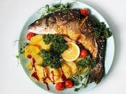
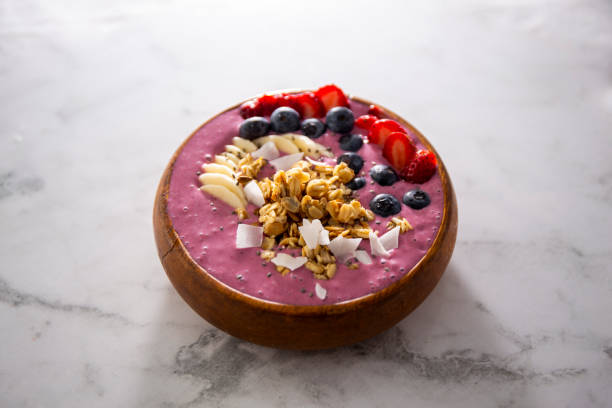
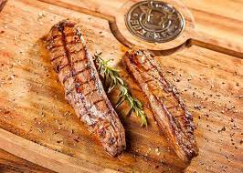

Öğlen Yemeğinde Yenebilecek Sağlıklı Yemek Tarifleri
Karnabahar Graten
Malzemeler
- 1 adet küçük boy karnabahar
- 1 su bardağı rendelenmiş kaşar peyniri
- 1 adet yumurta
- 3 yemek kaşığı sıvıyağ
- 3 su bardağı süt
- 2 yemek kaşığı un
- Karabiber, Tuz.
Yapılışı
- Karnabaharı çiçeklerine ayırın bir tencereye yerleştirin.
- Karnabaharın üzerine su ekleyerek diri kalacak şekilde haşlayın.
- Haşlama işleminden sonra karnabaharın suyunu süzün ve fırın tepsisine dizin.
- Bir kabın içerisine yumurta, un, süt sıvıyağ, tuz ve karabiberi ekleyerek karıştırın.
- Hazırladığınız karışımı karnabaharların üzerinde gezdirin.
- Önceden ısıtılmış 200 dereceli fırında karnabaharları yaklaşık 30 dakika pişirin.
- 30 dakika sonunda karnabaharları çıkartın ve üzerine rendelenmiş kaşar peyniri serpiştirin.
- Tekrar fırına atın ve kaşar peyniri eriyip kızarana kadar pişirin. Afiyet olsun.
Soya Soslu, Kerevizli Tavuk

Malzemeler
- 1 adet tavuk göğüs eti
- 2 adet saplı kereviz
- 1/2 adet soğan
- 4 yemek kaşığı soya sosu
- 2 çay kaşığı üzüm sirkesi
- 2 yemek kaşığı mısır nişastası
- 1/4 çay kaşığı zencefil tozu
- 1.5 yemek kaşığı iri öğütülmüş karabiber
- 4 yemek kaşığı zeytinyağı
Yapılışı
- Tavuğu dilimleyin ve kapaklı bir kaba alın. 2 yemek kaşığı soya sosu, 1 çay kaşığı üzüm sirkesi, mısır nişastası ve zencefili ilave edip karıştırın.
- Kapağını kapatın ve marine olması için 30 dakika süreyle buzdolabında dinlendirin.
- 2 yemek kaşığı zeytinyağını bir tavaya koyun ve marine ettiğiniz tavukları ekleyerek pişirin. Tavukları tavadan bir kaba alın.
- Aynı tavaya kalan zeytinyağını koyun, ardından dilimlediğiniz kerevizi ve soğanları ekleyip soteleyin.
- Kalan 2 yemek kaşığı soya sosu ile 1 çay kaşığı üzüm sirkesini, pişmiş tavuk etlerini ve karabiberleri de ekleyerek 15 dakika daha pişirin ve sıcak servis edin.
Buharda Pişirilmiş Domates Püreli Et

Malzemeler
- 1 kg kuzu kuşbaşı
- 4 diş sarımsak
- 1 çay kaşığı rendelenmiş zencefil
- 1 kırmızıbiber
- 1/5 demet ince kıyılmış maydanoz
- 1 yemek kaşığı ayçiçek yağı
Sos İçin:
- 2 çay bardağı domates püresi
- 2 diş sarımsak
- 1 yemek kaşığı ayçiçeği yağı
- Tuz
- Karabiber
Yapılışı
- Kuşbaşı kuzu etlerini derin bir kaba alın. Bütün haldeki sarımsakları, rendelenmiş zencefili, küp doğradığınız kırmızıbiberi, ince kıydığınız maydanozu ve ayçiçeği yağını ekleyip karıştırın.
- Buhar pişirme aparatına malzemeleri aktarıp yaklaşık 35 dakika pişirin. Sos için gerekli malzemeleri tavaya alın.
- Ayçiçeği yağı, domates püresi ve ince doğradığınız sarımsağı ilave edip 4-5 dakika kısık ateşte pişirin.
- Pişen etleri de tavaya alıp karıştırın. Ocaktan almaya yakın tuz ve karabiberi ekleyip ocaktan alın. Sıcak servis yapın.
Mücver

Malzemeler
- 20 adet sakız kabak
- 5 dilim beyaz peynir (Rendelenmiş)
- 1 demet nane (İnce kıyılmış)
- 1 demet maydanoz (İnce kıyılmış)
- 1 demet dereotu (İnce kıyılmış)
- 10 adet kültür mantarı (Mümkünse istiridye mantarı ve ince kıyılmış)
- 6 adet yumurta
- 1 su bardağı un
- Tuz
Sos İçin:
Yapılışı
- Kabakların çekirdeğini almadan, sadece kabuk ve yanak kısımlarını rendeledikten sonra, 1 çay kaşığı tuz ile suyunu salması için bir kenarda bekletin.
- Daha sonra bir tülbent yardımıyla suyunu sıkın.
- Kabakla birlikte tüm yeşillikleri ve mantarı bir kapta harmanlayın ve yumurta ile unu ilave ederek karıştırın.
- Süzme yoğurdu bir kaseye alarak pürüzsüz bir hale gelene kadar çırpın. Ceviz ve kişnişi ekleyerek sosu hazırlayın.
- Bir tavaya kızartma yağını alın. Bir kaşık yardımıyla mücver harcını tavaya alın ve kızgın yağda önlü arkalı kızartın.
- Pişen mücverleri isterseniz sosun altına, isterseniz üzerine koyarak servis edin.
Kuzu Ciğeri

Malzemeler
- 800 g kuzu ciğeri (Zarı alınmış ve kuşbaşı doğranmış)
- 100 g kuzu kuyruk yağı (Kuşbaşı doğranmış)
- 30 g tuz
- 30 g kimyon
- 30 g toz biber
- 1 adet biber
- 1 adet domates
- 2 adet soğan (Halka doğranmış)
Yapılışı
- Kuzu ciğeri ve kuyruk yağını bir kaba alarak baharatla harmanlayın ve 2 ciğer, 1 kuyruk yağı olacak şekilde şişe dizin. Kömür ateşinde 3,5 dakika pişirin.
- Biber ve domatesi kömür ateşinde közleyin.
- Soğanı tuz, karabiber ve kimyonla harmanlayın.
- Servis tabağına lavaş ekmeğini koyun ve üzerine pişen ciğeri yerleştirdikten sonra közlenmiş biber ve domatesle birlikte soğan eşliğinde servis edin.
Sazan Levreği

Malzemeler
- 1 adet büyük boy sazan balığı
- 2 yemek kaşığı nar ekşisi
- 2 yemek kaşığı erik salçası
- 100 gram kişmiş (çekirdeksiz kuru üzüm)
- Ceviz içi
- 50 gram kuru erik
- Karabibe
- Tuz
Yapılışı
- Nar ekşisi, erik salçası, karabiber ve tuzu bir kabın içerisinde karıştırın.
- Balığı tamamen temizlemeden önce bu sosa batırın.
- Kuru erik ve üzümleri küçük küçük doğrayın. Ceviz içini, ezin.
- Rendelenmiş soğan, erik, üzüm ve ceviz içini karıştırın. Hazırladığınız bu karışım adı levengidir.
- Balığın içini temizledikten sonra, içini levengi ile doldurun veya sarın.
- Önceden ısıtılmış 180 dereceli fırında sazan levengiyi 1 saat pişirin.
- Hazırladığınız sazan levengiyi, maydanoz ve limon dilimleri ile birlikte servis edin. Afiyet olsun.
Acai Bowl

Malzemeler
- 50 g donuk frambuaz
- 50 g donuk böğürtlen
- 120 g donuk muz
- 5 g acai tozu
- 50 g badem sütü
Üzeri İçin:
Yapılışı
- Tüm malzemeyi robottan geçirerek 1 gece buzdolabında bekletin.
- Dondurma kaşığı yardımı ile servis kasesine alın ve üzerini süsleyerek servis edin.
Balık Yahnisi
Malzemeler
- 2 adet palamut
- Zeytinyağı
- Salça
- 2 adet kuru soğan
- 2 tatlı kaşığı nane
- 4 diş sarımsak
Yapılışı
- Öncelikle soğanları küçük küçük doğrayın. Sarımsakları ise ince bir şekilde kesin.
- Tencerenin içerisine zeytinyağı koyun ve ısıtın.
- Palamutların kılçıklarını mutlaka ayıklayın.
- Yağ ısınmaya başladığında soğan ve sarımsağı ekleyerek pembeleşene kadar kavurun.
- Soğanların üzerine kılçıkları ayıklanmış palamutları ekleyerek kavurun.
- Ardından salça ve nane ekleyerek karıştırmaya devam edin.
- Yemeğin üzerini geçecek şekilde su ekleyin ve orta ateşte yaklaşık 20-25 dakika kadar pişirin.
- Hazırladığınız balık yahnisine, bir adet limonun suyu ve maydanoz ekleyerek servis edin. Afiyet olsun.
Levrek Külbastı
Malzemeler
- 2 adet levrek balığı
- 1 yemek kaşığı kapari
- 1 paket krema (220 ml)
- 4 diş sarımsak
- 200 ml. süt
- 4 diş sarımsak
- 2 adet patates
- Tuz
- Karabiber
- Domates sosu (isteğe göre)
Yapılışı
- Levrekleri fileto şeklinde kesip, derisinden tamamen ayırın.
- Tavaya sıvı yağ ekleyin ve kızdırın. Kızgın yağda levrekleri önlü arkalı pişirin.
- Pişirdiğiniz balıkları bir kenara alın ve bekletin.
- Balık tavasına ince ince kıyılmış sarımsakları atın ve kavurun.
- Ardından üzerine süt ve kremayı ilave edin.
- Sos kaynamaya başladığında içine balıkları yerleştirin.
- Balıklara kapari ve karabiber serpiştirin. Kapari turşusu tuzlu olduğu için, yemeğin tuzunu iyi ayarlayın.
- Bu şekilde 6-7 dakika pişirdikten sonra servis tabağına alın.
- Levrek külbastıyı patates püresi, havuç ve biber eşliğinde servis edebilirsiniz. Afiyet olsun.
Küşleme

Malzemeler
- 600 gram kuzu küşleme
- 2 yemek kaşığı yoğurt
- 1 yemek kaşığı domates salçası
- 1 yemek kaşığı bal
- 2 yemek kaşığı zeytinyağı
- 1 küçük soğanın suyu
- Karabiber
- Tuz
Yapılışı
- Kuzu küşlemeyi iri parçalar halinde doğrayın ve geniş bir kaba yerleştirin.
- Marine sosu için; Yoğurt, domates salçası, bal, zeytinyağı, soğan suyu, karabiber ve tuz ekleyerek çırpın.
- Hazırladığınız sosu etin üzerinde gezdirin. Elinizle eti harmanlayarak her tarafına sos gelmesini sağlayın.
- Etin üzerini streç film ile hava almayacak şekilde örtün.
- Eti buzdolabında yaklaşık 1 saat dinlendirin.
- Tavayı ocağa alarak iyice ısıtın. Etleri önlü arkalı olarak pişirin.
- Dilerseniz, hazırladığınız etleri mangalda da pişirebilirsiniz.
- Kuzu küşlemeyi, pirinç pilavı ile birlikte servis edebilirsiniz. Afiyet olsun.